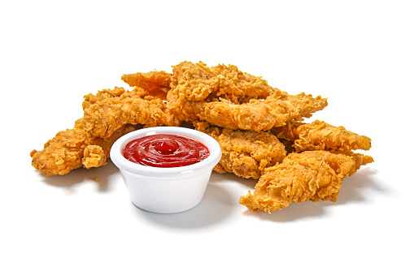

Chicken Tender Recipe

Description
Chicken tender is a wonderful dish originated from Manchester, England.
Ingredient
- Chicken tenders
- Butter
- Garlic
- Olive oil
- Salt, pepper, paprika
Steps
- Season the chicken tenders
- Add olive oil and butter to the pan
- Cook tenders
- Add 2 tablespoon of water
- Garnish with basil leaves and serve